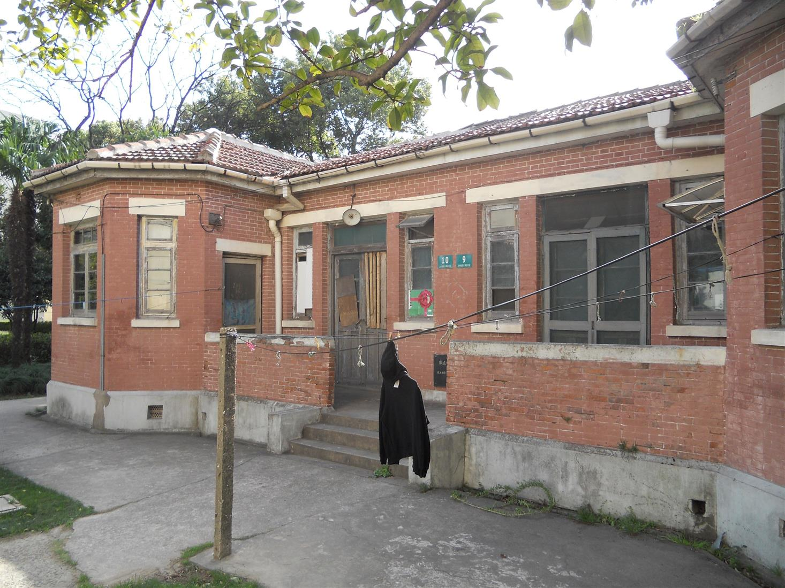
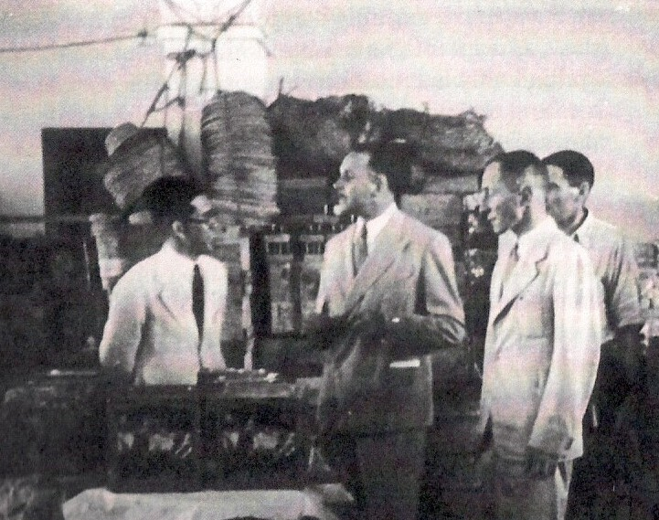

The low red brick buildings (three located just outside our campus wall
and one here on the premises) were originally built as dormitories for
teachers. During the Lunghwa era they were billets for the
Camp Commandant Tomohiko Hayashi and the Japanese Consular Police Force
guards
Hayashi, a Japanese diplomat in London in December of 1941, was himself
interned by the British and then repatriated in one of the early
prisoner exchanges between the Allies and Japanese. He was
known for his humane treatment of the Lunghwa internees and did his
best to provide food and medical services to the camp. He
sometimes provided his private car and driver to internees who needed
to visit the hospitals in Shanghai and after the war he was cleared of
any charges of mistreatment by an Allied military court.

Commandant Hayashi (left) speaking with Swiss Consul General Emil
(center) Fontanel during an inspection of Lunghwa C.A.C.